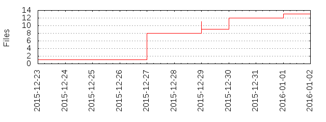

Files
General
Activity
Authors
Files
Lines
Tags
Total files
13
Total lines
897
Average file size
126994.00 bytes
File count by date

Extensions
Extension
Files (%)
Lines (%)
Lines/file
md
6 (46.15%)
413 (46.04%)
68
pdf
3 (23.08%)
14607 (1628.43%)
4869
perl
1 (7.69%)
54 (6.02%)
54
pm
1 (7.69%)
354 (39.46%)
354
r
1 (7.69%)
49 (5.46%)
49
txt
1 (7.69%)
24 (2.68%)
24